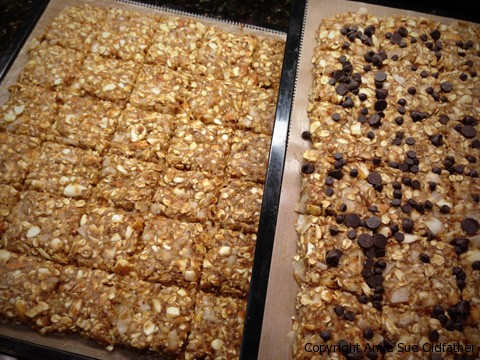
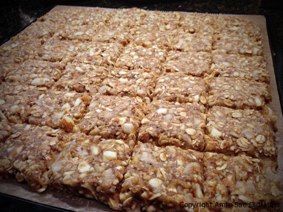
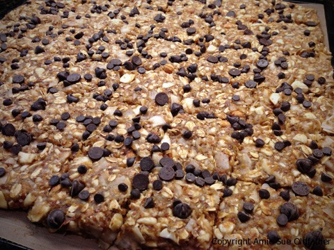
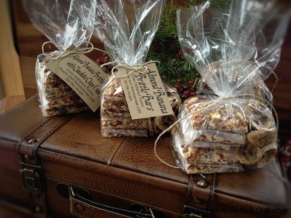

Almond Banana Brittle Cookie Squares

~ raw, vegan, gluten-free ~
The aroma of the Almond Banana Brittle Bars drying in the dehydrator is equivalent to baking chocolate chip cookies in the oven!
One of two things almost happened… I would pitch a tent in my pantry to camp out below the dehydrator, or I was going to bring the machine into my bedroom. It was just heavenly. One thing I noticed when I had switched to a high raw diet was that my sense of smell developed, and trust me, this bar caused my nose to go into hyperdrive mode!
When I created this bar, I used up my almonds that I had already soaked and dehydrated. If you are running a bit short of time and want to shave off a little time on this recipe, you can soak the almonds overnight. The next day, drain and rinse them thoroughly. You can use them this way in the recipe.
BUT I want to encourage you to use soaked and dehydrated almonds. The reason is that this process changes the nature of the almond. It gives it a lighter and crunchier texture, which works perfectly with this recipe.
If you are not in the habit of soaking and dehydrating the nuts, I encourage you to try it. Just make your nut purchase, bring them home, and immediately throw them in a bowl to soak. Then dehydrate and store the nuts in a glass jar. That way, they are ready to go when needed, and if you ever need a quick snack, they will be so much easier on your digestive system.
These bars are firm, crispy, and chewy all in one. My husband loved the ones with chocolate the most, but then he does love chocolate. The combination of almonds, bananas, and chocolate created a beautiful medley of flavors.
Bob and I bantered back and forth a bit as to what to call them… bars? Cookies? He thought they were too thin to be bars, and well, I didn’t think the square shape reminded me of a cookie. We playfully duked it out… we met in the middle… Almond Banana Brittle Cookie Squares. LOL, He walked away, smiling as he went to eat another one. :) So call them bars, call them cookies, call I’ll want one when you make them.
yields 10 cups batter ( 72 2×2″ squares)
Wet Ingredients:
- 2 cups hot water for rehydration
- 8 oz dried banana, rehydrated in warm water
- 2 1/2 cups Medjool dates, pitted
Dry Ingredients:
Preparation:
- In a medium-sized bowl, combine the hot water, dried bananas, and dates. Allow them to soak while you work on the rest of the recipe.
- In a food processor, fitted with the “S” blade, process the almonds to small-medium sized bits — place in a large bowl.
- Add coconut, oats, cinnamon, cacao nibs. Toss together with hands.
- Back in the food processor, place the soaked banana, dates, along with the soak water. Blend until creamy. Pour over the dry ingredients and mix well with your hands.
- Place 5 cups of batter on each tray (I use the Excalibur) Spread with your hands and press down firmly and evenly.
- Score the batter into desired shapes and sizes.
- Sprinkle 1/2 a cup of cacao nibs on each tray and gently pat them into the batter.
- If you want to use raw chocolate chips… be warned that they will melt during the drying of the bars so that I would advise against it.
- Dehydrate at 145 degrees (F) for 1 hour, reduce to 115 degrees (F) and continue drying for 20-24 hours or until dry.
- Once cooled, store in airtight containers on the counter for up to 7 days, fridge 2 weeks, or freezer for a month. Could last longer this each way, but we just eat them too quickly to find out actually.
The Institute of Culinary Ingredients™
- Dates are a fantastic ingredient for raw food recipes, click (here) to read why.
- Why do I specify Ceylon cinnamon? Click (here) to learn why.
Culinary Explanations:
- Why do I start the dehydrator at 145 degrees (F)? Click (here) to learn the reason behind this.
- When working with fresh ingredients, it is essential to taste test as you build a recipe. Learn why (here).
- Don’t own a dehydrator? Learn how to use your oven (here). I do, however, honestly believe that it is a worthwhile investment. Click (here) to learn what I use.
I did one tray with chocolate and one without just for variety.




For a packaging idea, I made up these treat bags with both types of bars. One with the chocolate
and one without. I alternated them, stacking them with a square of wax paper in between.
I then pushed the bars to the left side of the bag, and in the empty space, I filled it with
banana chips. Since the bars are made with bananas as one of the main ingredients, I thought it was appropriate.
© AmieSue.com